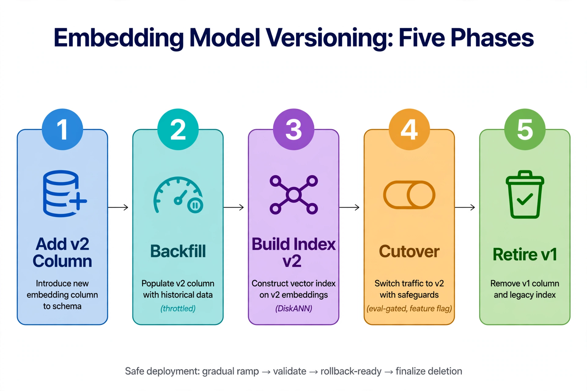

Chapter 30: Embedding Model Versioning
Why Model Changes Break Vector Search
Embedding models are versioned artifacts, and vendors update them: new training data, new architectures, deprecated endpoints. Every model change breaks vector search in one of two ways. Dimension mismatch is the loud one — the new model produces vectors of a different length than the old model. SQL Server's VECTOR(1536) column throws a hard error if you attempt to insert a 1,024-dimensional vector. This is the easy failure to catch.
Semantic drift is the quiet one — same dimension, different geometry. A new model version with 1,536 dimensions produces vectors that fit your column perfectly and mean something completely different. Queries run, distances look plausible, and retrieval quality degrades without a single error. This is the failure that costs you users, and it is why model identity must be a first-class column in your schema, not a deployment note.
---
Detecting Degradation Before and After Migration
Never migrate on faith. Before committing to a new model, run the canary: embed your eval question set with both models, retrieve from side-by-side columns, and compare recall@k and faithfulness (Chapters 22.8, 27). Migrate only when the new model meets or beats the old on your data — vendor benchmark improvements do not always transfer to domain corpora.
After cutover, keep the old column for one full business cycle as the control. If production metrics (refusal rate, thumbs-down rate, top-1 distance distribution) degrade, the rollback is a query-path switch, not a re-ingest — because the old vectors are still there.
-- SQL Server: pre-migration A/B comparison on the eval set
-- Documents(Embedding = old model, Embedding_v2 = new model backfilled)
-- EvalQuestions(QuestionId, QOld VECTOR(1536), QNew VECTOR(1536), GoldChunkId)
SELECT 'old_model' AS Model,
AVG(CASE WHEN g.GoldChunkId IN (
SELECT TOP (10) d.ChunkId FROM dbo.Documents AS d
ORDER BY VECTOR_DISTANCE('cosine', d.Embedding, q.QOld))
THEN 1.0 ELSE 0.0 END) AS RecallAt10
FROM dbo.EvalQuestions AS q JOIN dbo.GoldChunks AS g
ON g.QuestionId = q.QuestionId
UNION ALL
SELECT 'new_model',
AVG(CASE WHEN g.GoldChunkId IN (
SELECT TOP (10) d.ChunkId FROM dbo.Documents AS d
WHERE d.Embedding_v2 IS NOT NULL
ORDER BY VECTOR_DISTANCE('cosine', d.Embedding_v2, q.QNew))
THEN 1.0 ELSE 0.0 END)
FROM dbo.EvalQuestions AS q JOIN dbo.GoldChunks AS g
ON g.QuestionId = q.QuestionId;
-- Migrate only if new_model RecallAt10 >= old_model on YOUR questions.
---
Migration Strategies: Zero-Downtime Approaches
The zero-downtime pattern is side-by-side: add a second vector column, backfill it with the new model, build a second DiskANN index, eval-gate the cutover, then retire the old column. Retrieval never stops serving — it just switches which column the query reads.
-- SQL Server: zero-downtime embedding model migration
-- Phase 1: add the new column (nullable; old column keeps serving)
ALTER TABLE dbo.Documents ADD Embedding_v2 VECTOR(3072) NULL;
-- Phase 2: backfill in throttled batches (see Section 30.4)
-- Phase 3: index the new column once backfill completes
CREATE VECTOR INDEX IX_Documents_Embedding_v2
ON dbo.Documents (Embedding_v2)
WITH (METRIC = 'cosine', TYPE = 'DiskANN', MAXDOP = 8);
-- Phase 4: cutover — retrieval procedure switches column + model predicate
-- (deploy behind a feature flag; eval-gate before flipping)
-- Phase 5: after one stable business cycle, retire the old column
-- DROP INDEX IX_Documents_Embedding ON dbo.Documents;
-- ALTER TABLE dbo.Documents DROP COLUMN Embedding;
-- EXEC sp_rename 'dbo.Documents.Embedding_v2', 'Embedding', 'COLUMN';The retrieval procedure must be model-aware from day one — a @modelVersion parameter that selects the column and the ModelName predicate. If the model choice is hardcoded in application code, every migration becomes a code deploy instead of a flag flip, and rollbacks get slower exactly when you need them fast.

The phases run strictly left to right. 1: Add v2 Column (blue) introduces the new embedding column alongside the old — both live side by side. 2: Backfill (teal) populates it from history, throttled so it doesn't starve production. 3: Build Index v2 (purple) constructs the DiskANN index on the new embeddings. 4: Cutover (amber) switches traffic behind a feature flag, gated on evaluation — this is the only irreversible step, and the flag makes it reversible anyway. 5: Retire v1 (green) drops the old column and index only after a stable cycle. The footer says it all: gradual ramp, validate, rollback-ready, then finalize deletion.
---
Backfill Job Design: Resumability and Rate Limiting
The backfill is the heaviest write workload your vector table will ever see: full-corpus embedding API spend plus a full column rewrite. Design it like any bulk job — resumable, throttled, observable:
-- SQL Server: migration backfill queue (resumable, observable)
CREATE TABLE dbo.ModelMigrationQueue (
QueueId BIGINT IDENTITY(1,1) NOT NULL
CONSTRAINT PK_ModelMigrationQueue PRIMARY KEY,
ChunkId BIGINT NOT NULL,
Status NVARCHAR(20) NOT NULL
CONSTRAINT DF_MMQ_Status DEFAULT ('pending'),
Attempts INT NOT NULL CONSTRAINT DF_MMQ_Attempts DEFAULT (0),
EnqueuedAt DATETIME2(0) NOT NULL
CONSTRAINT DF_MMQ_Enq DEFAULT SYSUTCDATETIME()
);
CREATE INDEX IX_MMQ_Status ON dbo.ModelMigrationQueue (Status, QueueId);
-- Seed: one row per chunk. Workers claim with UPDATE TOP ... OUTPUT
-- (Chapter 29.3 pattern), embed with the NEW model, and:
-- UPDATE dbo.Documents SET Embedding_v2 = CAST(@vec AS VECTOR(3072))
-- WHERE ChunkId = @chunkId;
-- Throttle: run fewer workers during business hours; the old column
-- keeps serving, so backfill speed is a cost decision, not an outage.
-- SQL Server: backfill progress dashboard
SELECT Status, COUNT(*) AS Items,
MIN(EnqueuedAt) AS OldestItem
FROM dbo.ModelMigrationQueue
GROUP BY Status;
-- And verify no NULLs remain before building the v2 index:
-- SELECT COUNT(*) FROM dbo.Documents WHERE Embedding_v2 IS NULL;
Rate-limit against the embedding provider's quota, not your database's throughput — the API is always the bottleneck. Checkpoint per batch so a killed worker resumes instead of restarting, and keep the backfill's transaction scope small: one batch per transaction, never the whole corpus.
---
Handling Dimension Changes: The Hard Case
In SQL Server, vector columns are typed with a fixed dimension: VECTOR(1536) will reject a VECTOR(1024) insert with a hard error. You have two options:
Option A: side-by-side column with the new dimension (recommended). ALTER TABLE ... ADD Embedding_v2 VECTOR(1024) — the pattern from Section 30.3. Clean, explicit, and the old column remains a rollback target. The cost is temporary double storage during migration.
Option B: in-place migration with downtime. Drop the vector index, alter the column type, re-embed everything, rebuild. Only acceptable for small corpora in maintenance windows — and even then, Option A's safety margin usually justifies its storage cost.
-- SQL Server: dimension change via side-by-side column
-- Old: Embedding VECTOR(1536) | New model: 1024 dimensions
ALTER TABLE dbo.Documents ADD Embedding_v2 VECTOR(1024) NULL;
-- Backfill Embedding_v2 with the new model (Section 30.4 pattern),
-- then index and cut over exactly as in Section 30.3.
-- The fixed-dimension type is doing its job: a 1536-d vector can never
-- silently land in the 1024-d column. That strictness is the feature
-- that makes Option A safe.
Never "pad" or "truncate" vectors to force a dimension fit — zero-padding a 1024-d vector into a 1536-d column produces vectors that compare meaninglessly against true 1536-d vectors. Dimension is identity; treat it as such.
---
Version Pinning and Model Deprecation Tracking
Pin exact model versions in configuration — text-embedding-3-small today may resolve to a different snapshot tomorrow if the vendor updates the alias. Store the resolved version (model name plus version date or snapshot ID) in the ModelName column at ingest time, so every vector carries its provenance.
-- SQL Server: model deprecation tracking
CREATE TABLE dbo.EmbeddingModelRegistry (
ModelName NVARCHAR(100) NOT NULL
CONSTRAINT PK_EmbeddingModelRegistry PRIMARY KEY,
Vendor NVARCHAR(60) NOT NULL,
Dimensions INT NOT NULL,
DeprecatedAt DATETIME2(0) NULL, -- vendor deprecation notice date
RetireAt DATETIME2(0) NULL, -- when the API goes dark
ReplacedBy NVARCHAR(100) NULL,
MigrationStatus NVARCHAR(20) NOT NULL
CONSTRAINT DF_EMR_Status DEFAULT ('current')
);
-- Ops review query: which models in production are on a deprecation clock?
SELECT r.ModelName, r.RetireAt, r.ReplacedBy,
(SELECT COUNT(*) FROM dbo.Documents AS d
WHERE d.ModelName = r.ModelName) AS VectorsAffected
FROM dbo.EmbeddingModelRegistry AS r
WHERE r.RetireAt IS NOT NULL
ORDER BY r.RetireAt;
-- A vendor deprecation notice starts the migration clock in Section 30.3:
-- the RetireAt date is your backfill deadline.
Treat vendor deprecation notices like certificate expirations: they arrive with a deadline, the migration takes longer than you expect, and the cost of missing the deadline is an outage. The registry turns a surprise into a scheduled project.
---
Key Takeaways
VECTOR(n) type catches the first; only eval-gated migrations catch the second.@modelVersion parameter selecting column and predicate turns migrations into flag flips instead of code deploys.QueryOptimizer — Self-Hosted SQL Performance Workbench
EXPLAIN visualizer · Index advisor · Slow query dashboard · SQL Server
Test yourself on this chapter
5 questions · instant scoring · explanations included